Giovanni Ceva: Italian (1647–1734)
It is not uncommon that a person of outstanding genius is remembered largely as a result of one work. This trend is particularly noticeable in the fields of music and literature. It is also the case in mathematics. Here we have a mathematician whose primary area of interest was geometry, but who also dabbled to some extent in economics and physics. This was the Italian mathematician Giovanni Ceva who was born in Milan, Italy, on September 1, 1647, into what would be considered in his day a wealthy family. Although we know very little about his early years, Ceva later made comments about his youth being sad, with many kinds of misfortune. He received his education at the Jesuit College in Milan, at the Palazzo di Brera, where he showed an early talent for mathematics and science.
After completing his college studies, he followed his father’s footsteps, engaging in business and political activities largely in Milan, Genoa, and Mantua, yet his interest in science and mathematics continued. He eventually entered the University of Pisa in 1670 to study mathematics. During his time at the university, he struggled with the problem of squaring the circle, that is, of constructing a square with the same area as a given circle using only a straight edge and a pair of compasses. Rather discouraged, he gave up this effort; interestingly, in 1882, the problem of squaring the circle was proved to be impossible, as a result of the Lindemann-Weierstrass theorem, which proved that π is a transcendental number. In 1678, Ceva published his book De lineis rectis se invicem secantibus statica constructio, while continuing to work with his father. This work took him to Mantua and Montferrat in a position such that he was responsible for the economy of these two states. This responsibility did not deter him from further pursuing mathematical interests and publishing other works. His most effective employment was rewarded by the Duke of Mantua, who granted Ceva citizenship there. While pursuing his mathematical studies alongside his work, he corresponded with many of the leading mathematicians of his day.
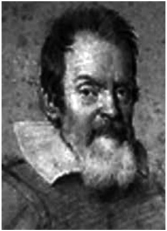
Figure 19.1. Giovanni Ceva.
He married Cecilia Vecchi on January 15, 1685. They had seven children, and the five that survived birth were also given citizenship by the Duke of Mantua. In 1686, he was appointed professor of mathematics at the University of Mantua. He continued at this university position for the rest of his life, including the time, in 1707, when the region was under Austrian protection.
Ceva is remembered today for a theorem about triangles that he published in his 1678 book, De lineis rectis se invicem secantibus statica constructio. Ceva’s theorem states that the product of the alternate segments along the sides of the triangle, determined by the intersections of concurrent line segments (called cevians) emanating from the triangle’s vertices and ending at the opposite side, are equal.
Ceva’s theorem is an equivalence, or biconditional, which means that the converse is also true. To justify it requires two proofs—the original statement and its converse. Ceva’s theorem states the following, referring to triangle ABC shown in figure 19.2: The three lines containing the vertices of triangle ABC and intersecting the opposite sides in points L, M, and N, respectively, are concurrent if and only if AM · BN · CL = MC · NA · BL = 1, or, stated another way,
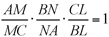
.There are many proofs available to justify this theorem, yet we shall use just one of these methods to prove this wonderful theorem.1 It is perhaps easier to follow the proof by looking at the left-side diagram in figure 19.2, and then verifying the validity of each of the statements in the right-side diagram. In any case, the statements made in the proof hold for both diagrams.
In figure 19.2 we have on the left, triangle ABC, with a line (SR) containing A and parallel to BC; SR intersects CP extended at S and BP extended at R.
The parallel lines enable us to establish the following pairs of similar triangles:
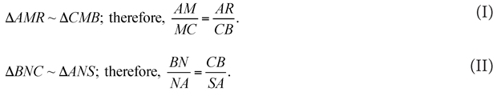
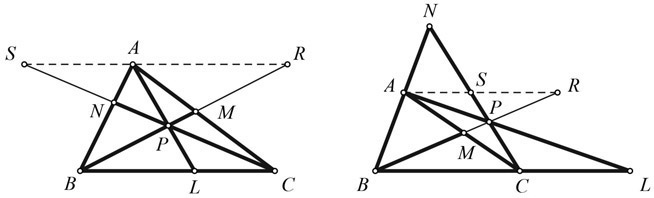
Figure 19.2.
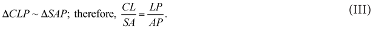
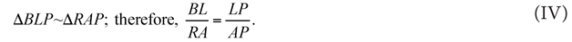
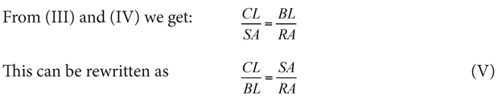
Now by multiplying (I), (II), and (V) we obtain our desired result:
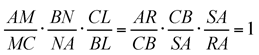
This can also be written as AM ∙ BN ∙ CL = MC ∙ NA ∙ BL.
The converse of this theorem is of particular value as well. That is, if the products of the alternate segments along the sides of the triangle are equal, then the cevians determining these points must be concurrent.
We shall now prove that if the lines containing the vertices of triangle ABC intersect the opposite sides in points L, M, and N, respectively, so that
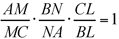
, then these lines AL, BM, and CN, are concurrent.Suppose BM and AL intersect at P. Draw PC and call its intersection with AB point N’. Now that AL, BM, and CN’ are concurrent, we can use the part of Ceva’s theorem proved earlier to state the following:
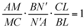
But our hypothesis stated that
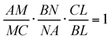
Therefore,
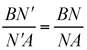
so that N and N′ must coincide, which thereby proves the concurrency.For convenience, we can restate this relationship as follows: If AM ∙ BN ∙ CL = MC ∙ NA ∙ BL, then the three lines are concurrent.
There is an interesting variation to Ceva’s theorem, which was discovered by the French mathematician Lazare Carnot (1753–1823).2 Here the concurrency of the three cevians is specified by the partitioned angles at the triangle’s vertices. In figure 19.3, we have cevians AL, MB, and CN that partition the angles as follows:
angle A is partitioned into α1 and α2,
angle B is partitioned into β1 and β2, and
angle C is partitioned into γ1 and γ2.
They will meet at a common point P if and only if3 ×
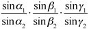
. The proof entails using the law of sines several times and is left to the ambitious reader.Ceva further enriched our knowledge of geometry by discovering a theorem that was developed in 100 CE by the Greek mathematician Menelaus of Alexandria (70–140 CE),4 who established that the equal products of alternate segments on the sides of a triangle determine collinear points as you can see from the following statement of Menelaus’s theorem:
If three points, X, Y, and Z, are located on the sides (or their extensions, as shown in fig. 19.4b) of triangle ABC such that AZ · BX · CY = AY · BZ · CX, then the three points X, Y, and Z are collinear. (See figs. 19.4a and 19.4.b.)
The proof of Menelaus’s theorem is rather straightforward and once again uses elementary geometry relationships. Once again, this is a biconditional relationship and can be stated symbolically as follows:
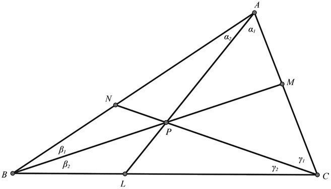
Figure 19.3.
Figures 19.4a and 19.4b.
AZ · BX · CY = AY · BZ · CX if and only if X, Y, and Z are collinear.
We shall first prove that if X, Y, and Z are collinear, then AZ · BX · CY = AY · BZ · CX.
Draw a line containing C, parallel to AB, and intersecting XYZ or YXZ at D, as shown in figure 19.5. We are thus beginning with the given collinear points X, Y, and Z.
For ΔCDX ~ ΔBXZ, therefore,
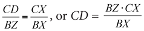
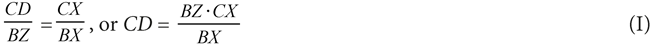
For ΔCDY ~ ΔAPZ, therefore,
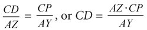
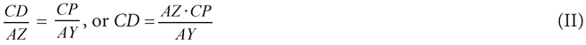
From equations (I) and (II):
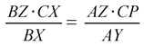
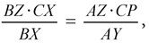
from which we easily get AZ · BX · CY = AY · BZ · CX.
Now we shall prove that if the points X, Y, and Z are so situated that the equation AZ · BX · CY = AY · BZ · CX is true (or another way of expressing this is that
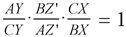
, then the three points X, Y, and Z are collinear.We will let the intersection point of AB and XY be the point Z’. Then we have to prove Z’ = Z.
Because of part 1 (above) we have
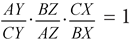
, also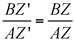
.Therefore, we have Z’ = Z, and the points X, Y, and Z must be collinear.
The sad thing about Ceva’s fame today is that during his time, his 1678 book was not popular; it was only published in one edition. Many of his findings were then later discovered by other mathematicians, who were not aware of Ceva’s work, and so they were unable to attribute their findings to him. It was not until the nineteenth century that the French mathematician Michel Chasles (1793–1880) recognized that Ceva’s work predated those of subsequent mathematicians. Therefore, we refer to this theorem now correctly as Ceva’s theorem. Beyond his work in geometry, Ceva also worked with applications of mechanics, but clearly his fame today is limited to his work in geometry. Ceva died in Mantua, Italy, on May 13, 1734.
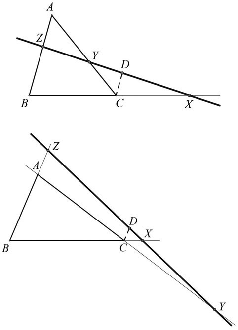
Figure 19.5.